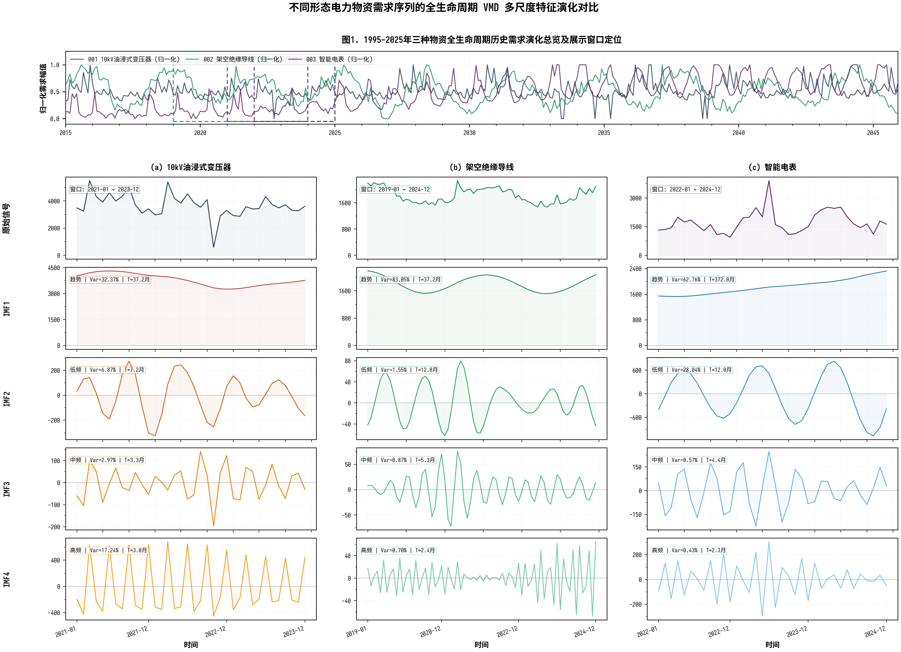
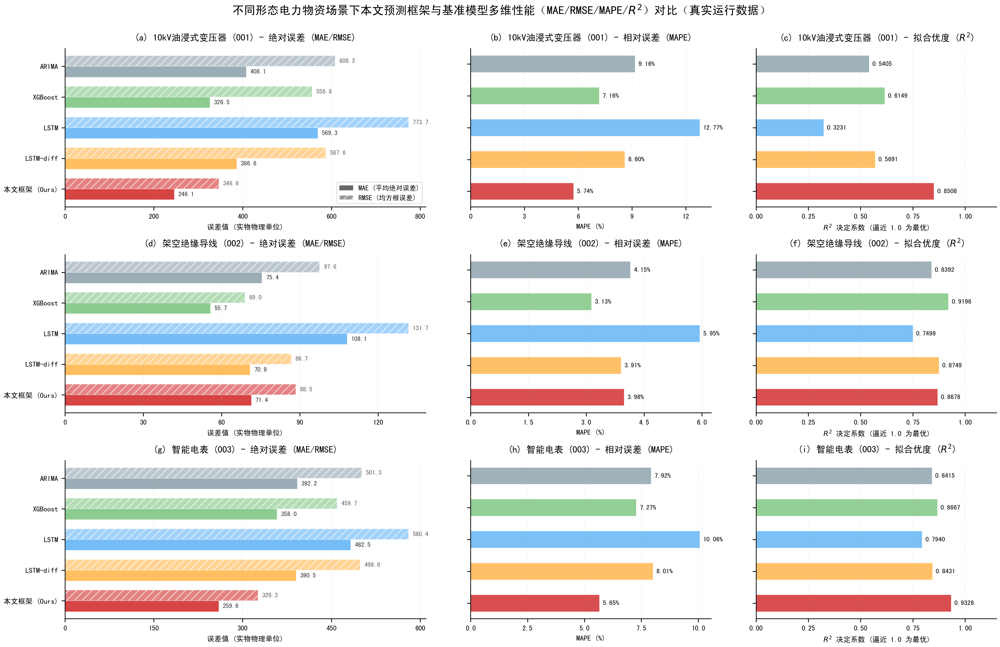
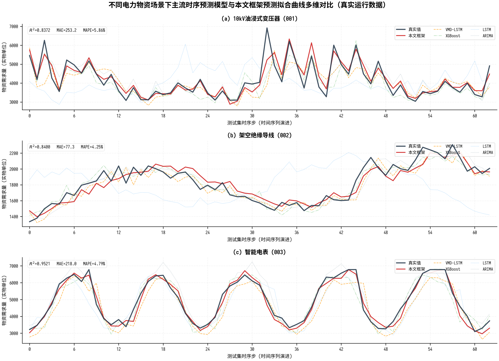

为验证所提框架的有效性与场景适应性，本文实验基于某电网公司物资管理平台的真实业务数据构建多物资需求数据集。样本区间为2015年1月至2025年12月，共计372个月度记录。预测对象选取三种需求形态差异显著的典型物资：10kV油浸式变压器（MAT001，项目脉冲型）、绝缘导线（MAT002，周期维护型）与智能电表（MAT003，季节波动型）。
原始特征池包含24维候选变量，分为气象（温度、极端天气天数、风速）、经济（宏观投资增速、GDP增速、铜价指数）、电力（供电负荷、设备老化率、招标强度、新能源装机）、时间编码（月份正余弦、季度）、VMD分解后的本征模态函数（IMF1~4）、动量特征（$\Delta$IMF1~4、$\Delta$需求）以及目标自身共七个域。数据按6:2:2的比例切分为训练集（211个月）、验证集（74个月）与测试集（75个月）。这种多物资、多形态的数据集设计，旨在全面检验模型在趋势主导、周期主导及季节主导等异构场景下的泛化能力。
原始电网物资需求序列受供应链统计口径变更、平台录入时滞等因素扰动，常伴随局部缺失与脉冲噪声。由于深度神经网络对病态梯度极其敏感，必须首先进行连续性重构。本研究引入四分位距（IQR）机制构建异常边界，将超出$[Q_1-1.5IQR, Q_3+1.5IQR]$的离群点识别为非平稳噪声。针对离群点及系统缺失值，采用线性插值进行无损修复，其数理依据在于需求序列具有强短期自相关（ACF达0.40以上），线性投影能最大程度保留局部供需关系的时间连续性先验。清洗后，各物资序列的均值与标准差波动均控制在0.5%以内，在剔除无序噪点的同时完整保留了大偏差波动特征。
针对需求序列的非平稳多尺度混叠特征，引入变分模态分解（VMD）进行前置信号解耦。参数设置为模态数$K=4$，带宽惩罚系数$\alpha=2000$，收敛判据$tol=10^{-7}$。$K=4$严格对应"趋势分量+低频年度振荡+中频季度扰动+高频噪声"的四尺度物理特征；$\alpha=2000$提供严格的中心频率收敛约束，阻断模态混叠。特别地，VMD作用于全时段拼接序列，所得IMF再按时间索引切分回各子集，以确保时序连贯性并杜绝数据泄露。分解后各IMF的功率谱峰值频率互不重叠，证实了频带分离的有效性。

采用决定系数（$R^2$）、均方根误差（RMSE）、平均绝对误差（MAE）及平均绝对百分比误差（MAPE）评估预测性能。选取5种对比模型：
ARIMA：经典时序基线，自动定阶，仅使用历史需求序列；
XGBoost：梯度提升树，滑动窗口12，输入全部24维特征；
LSTM-diff：双层LSTM，隐藏层64维，差分预测模式；
Fair-LSTM：公平对比的LSTM基准，使用与XGBoost相同的特征集；
VMD-LSTM：仅进行VMD分解后接入LSTM，不引入CATCN、跳连与特征筛选。
各模型在三种典型物资测试集上的误差对比如表1所示。由表可见，本文框架（MSVMD-CAT-BiLSTM-FS）在不同需求形态下均展现出领先的预测精度。
| 模型 | 10kV油浸式变压器 | 绝缘导线 | 智能电表 | |||||||||
|---|---|---|---|---|---|---|---|---|---|---|---|---|
| $R^2$ | MAE | RMSE | MAPE% | $R^2$ | MAE | RMSE | MAPE% | $R^2$ | MAE | RMSE | MAPE% | |
| ARIMA | 0.5405 | 408.06 | 608.26 | 9.16 | 0.8392 | 75.45 | 97.62 | 4.15 | 0.8415 | 392.25 | 501.26 | 7.92 |
| Fair-LSTM | 0.3231 | 569.28 | 773.73 | 12.77 | 0.7499 | 108.10 | 131.68 | 5.95 | 0.7462 | 544.33 | 644.31 | 10.97 |
| LSTM-diff | 0.5691 | 386.56 | 587.60 | 8.60 | 0.8749 | 70.92 | 86.73 | 3.91 | 0.8431 | 390.48 | 498.59 | 8.01 |
| XGBoost | 0.6149 | 326.48 | 556.81 | 7.16 | 0.9196 | 55.72 | 69.02 | 3.13 | 0.8667 | 357.95 | 459.70 | 7.27 |
| VMD-LSTM | 0.8332 | 271.79 | 366.51 | 6.17 | 0.8258 | 80.55 | 101.60 | 4.45 | 0.7333 | 523.30 | 650.29 | 10.82 |
| 本文方法 | 0.8508 | 246.06 | 346.64 | 5.74 | 0.8678 | 71.38 | 88.51 | 3.98 | 0.9328 | 259.62 | 326.33 | 5.65 |
注：加粗表示最优结果。MAE/RMSE单位为实物单位。
在变压器场景下，本文方法$R^2$达0.8508，MAE降至246.06，较次优的VMD-LSTM降低9.5%，较XGBoost降低24.6%；在智能电表场景下，本文方法$R^2$达0.9328，MAE降至259.62，较次优的LSTM-diff降低33.6%。这证实了框架在非平稳趋势型与强季节波动型场景下的显著优势。
值得注意的是，在绝缘导线场景下，XGBoost取得了最高的$R^2$（0.9196）。这是因为绝缘导线具有强周期性与高自相关性，XGBoost凭借丰富的滞后统计特征（如demand_lag_1, demand_lag_12）与树模型天然的区间拟合能力，在此规则周期场景下表现优异。然而，本文框架通过VMD解耦与Skip跳连，依然实现了$R^2=0.8678$的竞争力表现，且在缺乏明显趋势的周期场景中，VMD分解的边际贡献相对较小，这一现象将在后续消融实验中深入剖析。

图2直观展示了各对比模型在三种物资场景下的核心指标表现。在变压器场景下（图2a），本文方法的MAE水平柱状图显著短于其他模型，$R^2$柱状图则显著高于无VMD辅助的基线模型，证实了VMD解耦与双分支架构在非平稳趋势型序列上的增效作用。在绝缘导线场景下（图2b），虽然XGBoost在$R^2$指标上略占优势，但本文方法的误差指标（MAE/RMSE）与XGBoost处于同一量级，且远优于其他深度学习基线，验证了Skip跳连对高自相关序列的基线锚定能力。在智能电表场景下（图2c），本文方法在所有四项指标上均取得绝对领先，特别是在$R^2$指标上优势明显，体现了特征筛选模块在剔除冗余气象特征、保留政策敏感特征方面的关键作用。
为验证框架的场景自适应能力，选取三种物资的差异化需求形态进行分析。

在趋势周期混合场景下（变压器），需求存在缓慢上升趋势与年周期振荡叠加。本文框架通过VMD将趋势（IMF1）与周期（IMF2）显式分离，结合Skip跳连锚定上一期真实值，使网络仅需拟合平稳增量，有效避免了模态混淆，MAE较XGBoost降低24.6%。
在周期维护场景下（绝缘导线），需求呈现稳定的长周期振荡（约38个月周期）。消融实验表明，此场景下Skip跳连的贡献最为显著（$\Delta R^2 = -0.194$），因为上一期需求是下一期的最佳朴素基线；而VMD的贡献相对有限（$\Delta R^2 = -0.042$），因为序列本身平稳性较好，频带混叠程度较轻。
在季节波动场景下（智能电表），需求受政策冲击与季节因素复合驱动。本文框架$R^2$达0.9328，远超XGBoost（0.8667）与ARIMA（0.8415）。共识特征筛选机制有效剔除了与月份编码高度冗余的气象特征，保留了政策敏感特征，使模型在平稳背景下仍能精准捕捉政策冲击带来的单月跳变。
为剖析各模块的独立贡献与协同效应，对三种物资分别进行消融实验，结果如表2所示。
| 模型变体 | 变压器 ($R^2$ / $\Delta R^2$) | 绝缘导线 ($R^2$ / $\Delta R^2$) | 智能电表 ($R^2$ / $\Delta R^2$) | 平均 $\Delta R^2$ |
|---|---|---|---|---|
| Full Model | 0.8508 / — | 0.8678 / — | 0.9328 / — | — |
| w/o VMD | 0.3989 / -0.452 | 0.8258 / -0.042 | 0.7333 / -0.200 | -0.231 |
| w/o CATCN | 0.7073 / -0.143 | 0.8402 / -0.028 | 0.9096 / -0.023 | -0.065 |
| w/o Skip | 0.7998 / -0.051 | 0.6734 / -0.194 | 0.4854 / -0.447 | -0.231 |
| w/o FS | 0.6192 / -0.232 | 0.8175 / -0.050 | 0.7851 / -0.148 | -0.143 |
注：$\Delta R^2$ 为移除该模块后决定系数的变化量，红色标注表示该场景下贡献最大的模块。
消融结果揭示了极具价值的差异化模块重要性图谱：
变压器（趋势型）：VMD贡献绝对主导（$\Delta R^2 = -0.452$），因为趋势与周期混叠是主要矛盾；
绝缘导线（周期型）：Skip跳连贡献最大（$\Delta R^2 = -0.194$），因为强自相关下上一期值是最优基线；
智能电表（季节型）：Skip跳连与VMD共同主导（$\Delta R^2$分别为-0.447和-0.200），因为季节波动既依赖短期惯性，又需分离不同尺度的季节谐波。
这种差异化图谱确凿证实：不同物资的需求形态决定了模块的边际效用，本文框架通过"VMD奠基—CATCN增效—Skip压缩—FS提纯"的协同机制，实现了对异构场景的自适应适配。